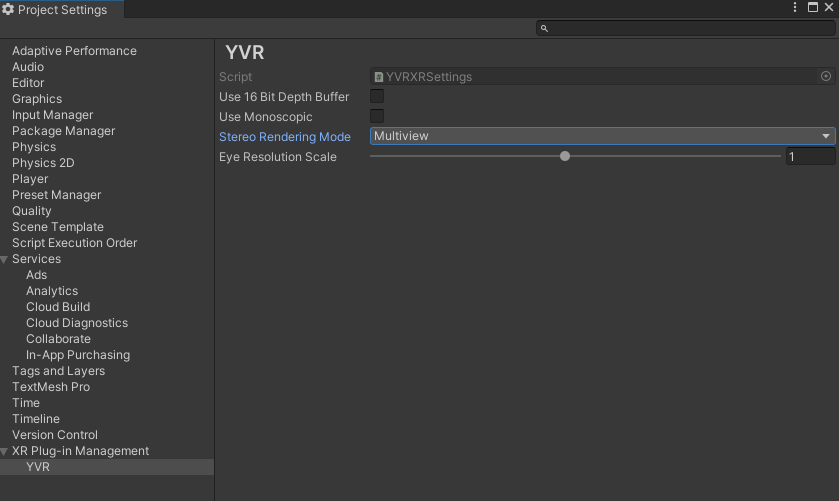

MultiView Stereo Rendering
Tip
Also known as Single Pass Stereo Rendering
YVR Devices support Single Pass Stereo Rendering which reduces CPU load that is used to summit draw call.
In typical stereo rendering, eye buffers for both eyes must be rendered in sequence which leads to double draw call. The multiview stereo rendering depends on MultiView Rendering features in OpenGL which allows draw calls to render to several layers of an array texture simultaneously. Thus, both content in left and right eye buffers can be drawn in single draw call, and the vertex shader can know what layer it is writing to, so the rendering result is still different for each eye buffer which ensures the stereo effect.
Two steps are required to open a single pass in Unity with YVR SDK:
- Select
Multiviewas the Stereo Rendering Mode in YVR XR Plugin-in configure window. 
Caution
Single pass stereo rendering required shader support, thus you need to modify your own custom shader in order to support single pass stereo rendering. For more information, please refer to the related Unity Document.